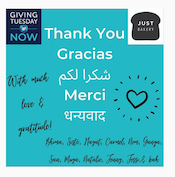
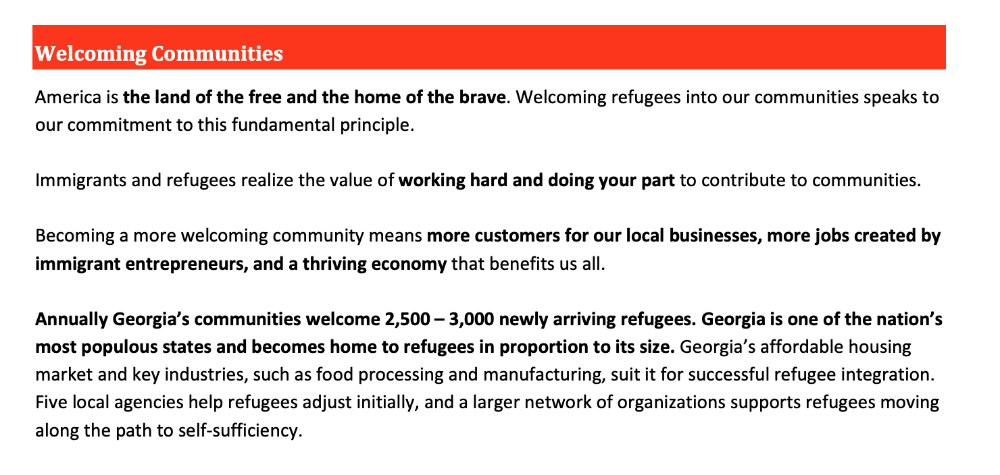
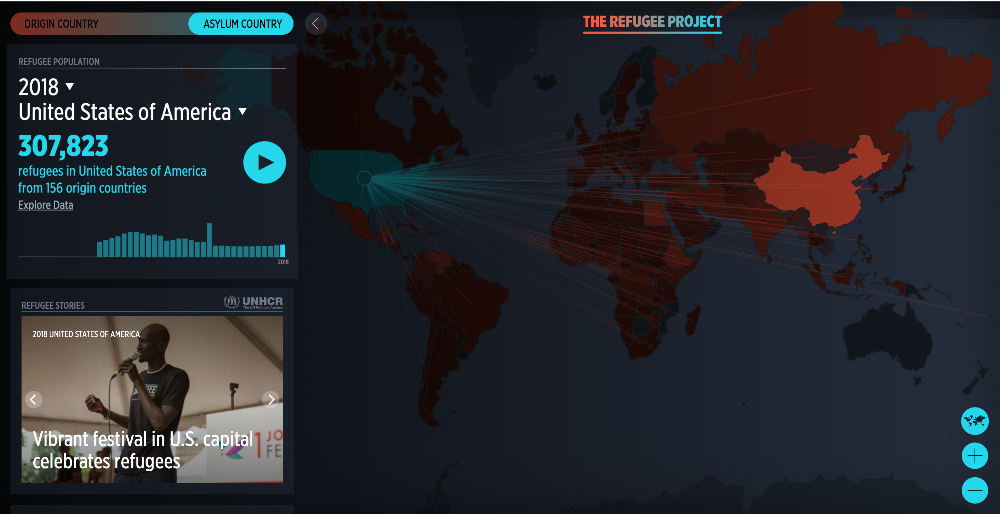
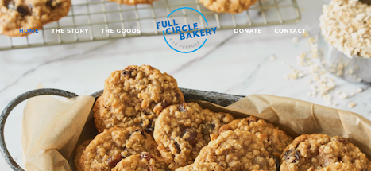
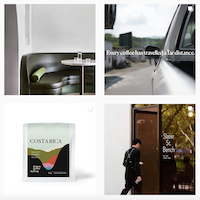
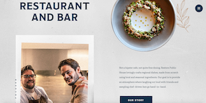

Research
Looking through the current Just Bakery website and social media intensively, finding other articles and inspiration, and interviewing the client and a potential user helped shape my process.
Primary Client Research
Research from Just Bakery's Website
Just Bakery of Atlanta is a non-profit organization to help and to empower refugees. The Bakery hires refugees to learn how to make a variety of baked goods and pays them a wage that is sustainable for them and their family. This non-profit contrasts the majority of businesses in Atlanta that typically offer refugees jobs with a limited pay.
Home Page

When a user first pulls up the site, a photo with the logo and slogan of the company appears and fills the web browser. As the site continues, Just Bakery of Atlanta’s home page features two videos that explain more about the organization and how it has impacted the workers’ lives as well as a button so people can donate if they choose to do so. Next, the website has a brief section that gives users a better insight of what the non-profit is and a button to click to learn more. The following section shows the three different categories of baked goods Just Bakery has: bread, cookies, and tasty treats. There are also other sections that give options of how people can find Just Bakery and other ways people can help.
Also, the photos throughout have an aqua-teal overlay and show the refugees in the kitchen.
Products
Under this section, there are three photos of the different “goodies” they bake. Each baked item then has a list of all of the specific types of goods they make along with a section where people can click to donate to Just Bakery.
Finding Our Food
This page on the website explains all of the ways people can find/buy Just Bakery. People can purchase through the options of delivery or even requesting special orders. Just Bakery also has different pop-ups locations and companies that host their products as well.
Ways You Can Help
People are able to donate to Just Bakery and know that 100% of their profits go straight to the organization to help refugees. Another opportunity allows neighborhoods to do group orders and deliveries. Also, Just Bakery goes to different locations for events, special occasions, and workplaces. Through this page, people can sign up on a form to volunteer, to help at different pop-up events to work, and to clean up events.
They also have updated important information regarding the nonprofit in the COVID-19 Pandemic.
About Us
The “About Us” section highlights the mission of the company. There are also two different tabs that show Just Bakery’s staff as well as their media coverage. Under the “Staff” tab, there are pictures and short bios of workers. Then, the media coverage highlights different news sources and articles that Just Bakery has been featured in.
Contact Us
A form is on this page in order for users to reach the bakery. In the footer, however, there is a phone number as well as links to their Facebook and Instagram that would also serve as ways of contact.
 Social Media
Both their Facebook and Instagram feature photos of their workers in the kitchen. On their Instagram specifically, they show photos of their customers with their baked goods and photos from events. Their Instagram’s profile picture is a picture of a piece of bread. Like Instagram, their Facebook shows the majority of the same pictures as their Instagram but it also posts different events that Just Bakery is having.
Colors and Typefaces
 Just Bakery of Atlanta uses the same consistent colors throughout their website. They use red for their buttons, icons, and as well as some text on the site. Additionally, an aqua-teal color is used as a background color for sections as well as an overlay for photos and for headings. A sand color is also used for different sections as a background color. Black and white are also prominent colors throughout the site.
Just Bakery of Atlanta uses the same consistent colors throughout their website. They use red for their buttons, icons, and as well as some text on the site. Additionally, an aqua-teal color is used as a background color for sections as well as an overlay for photos and for headings. A sand color is also used for different sections as a background color. Black and white are also prominent colors throughout the site.
The typefaces include a sans-serif, serif, and a script typeface as well as different sans-serif typefaces in their logo.
Secondary Client Research
After looking at Just Bakery of Atlanta’s website intensively, I knew I needed to do outside research to gain better knowledge and to find inspiration.
Refugee Crisis

According to Welcoming Refugees’s website, about 2,500 to 3,000 refugees come to Georgia annually. Specifically for Atlanta, the community of Clarkston (20 minutes outside of Atlanta) is home to thousands of refugees and has been referred to as the Ellis Island of the South.
The Refugee Project also provides statistics on refugees. Their website shows the number of people that have had to flee their home country to resettle somewhere else in hopes of a safer and more secure life. In 2018 alone, 307,823 refugees came from all over the world to the United States to start over.

Because of these statistics, I wanted to learn more about how design can specifically impact refugees. Designorate provided a helpful article that explained how we should be working alongside refugees to help discover solutions that will be impactful long-term for them. Along with this, I learned that it is important to understand that refugees are simply trying to support themselves and their families when they resettle.
Just Bakery is clearly working alongside refugees to try to help them long-term, and because of this, the website redesign has the power to have a tremendous impact.
Culturally Inclusive Design
Because of Just Bakery of Atlanta’s desire to connect diverse communities together through their mission of helping refugees, I knew I needed to learn how to design a website that is able to show cultural inclusion. Atlanta is a diverse city to begin with and because there is a possibility that refugees will look at the site as well as customers coming from different cultures, it is important that the design is able to communicate effectively to all cultures.
One of the articles I found on the website Go-Gulf gave me more insight to how designers can include a variety of cultural preferences to reach a broader audience as well as making their design more inclusive. It’ll be important that the website is simple not just to make it easier to navigate but because simplicity in design can help communicate to a broad range of people. Also, it will be important to make sure that the mobile version is user friendly for different cultures, and additionally because Just Bakery has a lot of events (Farmers Markets, Churches, Neighborhood events, etc.) where their customers would have their phones on them.
Toptal, the next website I found, gave seven dimensions of cross-cultural design that highlight differences between countries and how to relate better to their cultures in regards to design.
If I decide to create illustrations or icons to support my concept, it is important that they can be cross-cultural.
Even though I am researching specifically for Just Bakery, learning about culturally inclusive design has helped me see that this idea does not apply to just this website. As a designer, I should seek to make sure everyone can be included in the design while still focusing on the specific target audiences of the brand.
Other Solutions
Full Circle Bakery 
Full Circle Bakery provides a good example of using colors and photos effectively. The design is also simple enough to easily navigate yet provides all of the information and photos needed for the home page.
Criteria Coffee 
The website is simple yet still approachable. The texture in the background helps add another dimension to the design. I had not thought of using texture before this site which could be a good option to consider for Just Bakery’s website.
Their Instagram is also inspiring with the photos they use and how they still incorporate branding elements like type and their simplicity of black and white is seen in the simplicity in their photography.
Restore Public House 
This restaurant’s website exemplifies that good design can be used for anyone. Also, the design elements across the page clearly tell the story of the brand.
Interviews
Client Interview
I had the opportunity to email Leah Lonsbury, the director of Just Bakery of Atlanta, to gather more information about Just Bakery and how they are making a difference in Atlanta.
Lean mentioned that Just Bakery tends to set itself apart from other nonprofits because the work they do is not a temporary fix but instead it allows for greater economic security as a longer term and more permanent solution. Additionally, she went on to describe Just Bakery as delicious, satisfying, and developing, but she specifically went into more depth about the word satisfying. This word is two-folds in the way that the food is tasty but at the same time, their work is change-making in a satisfying way. Additionally, not only can people support local by buying from this nonprofit, but Just Bakery also shops local through their sustainable ingredients from a variety of local farms, vendors from markets, a bee keeping friend, and a local coffee shop.
When Leah talked about the target audience, she stated that their audience is people who want to make change with their choices and money as well as enjoying delicious baked goods. This is clearly represented in the diversity of people and groups that I took note of starting in the audiences and goals section but at the time I was not able to articulate why Just Bakery reached a broad audience. This point also goes back to my secondary research of culturally inclusive design because people who desire change tend to make up a diverse group of people.
Originally I put refugees as an audience for the website, but after talking with Leah, she said that the refugees that are hired get help from the International Rescue Committee and they prepare interested individuals for interviews. While potential hirees could still look at the website, they should not necessarily be a primary audience for the website.
Leah also briefly talked about how they plan on changing the working model for the refugees at the bakery. Right now, the work environment is more flexible and inviting for refugees to stay as long as they like, but come January, the bakery will have a more train and send model where refugees can work up to 2 years.
In regards to the website overall, Leah said that the website is designed to share who Just Bakery is and what they do. Additionally, the website is geared to help people find Just Bakery and their products.
Potential User Interview
I had the opportunity to talk with Caroline Pepper about Just Bakery of Atlanta. Caroline just graduated from Covenant College in Georgia with a degree in sociology and she is now working at a foster care agency in Chattanooga. Because of her background in sociology, how she always prefers to shop local as opposed to big chains, and her willingness to always offer a helping hand, Caroline was key to talk to about Just Bakery.
Just Bakery reminded Caroline of her time in Clarkston, Georgia where she helped and learned more about refugees. During her week there, she worked alongside Friends of Refugees, a local Clarkston nonprofit, and also went to Refuge Coffee Company, one of Just Bakery of Atlanta’s partners. She loved seeing the business model of Refuge Coffee and made note that it was very similar to Just Bakery’s.
When talking about Just Bakery of Atlanta, she mentioned that she personally valued how the bakery was helping refugees in a sustainable way because they are not giving the refugees handouts but instead offering job training and creating a lasting change. Caroline said it was easy to notice that they seem to really care about the people and make a difference by developing people and their skills which would help make a lasting change. Additionally, Caroline mentioned that this company helps Atlanta learn more about refugees, and in doing so, they break down the barrier between the refugee community and people who already are citizens of America by putting them in positions where both sides have the opportunity to communicate and have relationships with a diverse group of people. This allows people’s worldview to expand.
Caroline also pointed out that she believes that aspects like their Instagram and website have good bones to work with and has potential but if they were more consistent with engagement, had better photography, cohesive branding, and a website easier to navigate that these aspects would help drive their business even more.